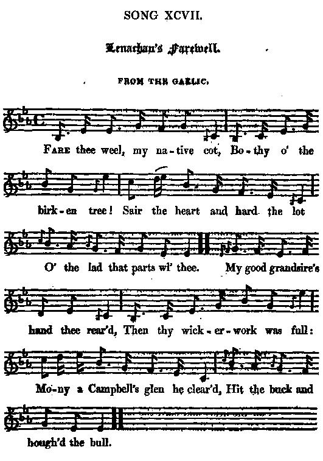

Lenachan's Farewell
L'adieu à Lenachan
Song of an Emigrant
Tune - Mélodie" Ho cha-n 'eil mulad oirnn"
from Hogg's "Jacobite Relics" 2nd Series N°97 page 189, 1821
Sequenced by Christian Souchon

|
To the tune:
"Was translated to me by Mr John Stewart, who affirmed it to be an Appin song, and told me the name of the emigrant who was said to have composed it, which, I think, was Macmurich, or some such sounding name. It is highly characteristic. The air is beautiful, a true Highland one, and in Frazer bears nearly the same name with this song, " Ho cha-n 'eil mulad oirnn'." (The Emigrant's Adieu N°226 page 92)". Hogg in "Jacobite Relics", volume 2 "The sentiments conveyed by the words of John McMurdo or McRae of Kintail, formerly mentioned as having emigrated, most feelingly point out the proper resources of mind, in bearing the adversities of life. Captain Simon Fraser "Airs and Melodies of the Highlands and the Isles", 1815 |
A propos de la mélodie:
"Ce chant m'a été traduit par M.John Stewart, qui m'a affirmé qu'l vient d'Appin et m'a donné le nom de l'émigrant qui l'a composé: un certain McMurich ou quelque chose dans ce genre-là. C'est un chant d'émigrant typique. La belle mélodie, un véritable air des Highlands, porte chez Fraser le même titre que le chant, "Ho cha-n 'eil mulad oirnn'." ("Adieu de l'émigrant", N°226 page 92)". Hogg in "Jacobite Relics", volume 2 "Les sentiments exprimés dans les déclarations de John McMurdo ou de McRae de Kintail, dont on a déjà dit qu'ils avaient émigré, soulignent de façon éclatante les ressources de l'esprit humain face aux vicissitudes de la vie. Captain Simon Fraser "Airs and Melodies of the Highlands and the Isles", 1815 |

|
LENACHAN'S FAREWELL
From the Gaelic (*) 1. Fare thee weel, my native cot, Bothy o' the birken tree! Sair the heart and hard the lot 0' the lad that parts wi' thee. My good grandsire's hand thee reared, Then the wicker work was full; Mony a Campbell's glen he cleared, Hit the buck and houghed the bull. 2. Never hand in thee yet bred Kendna how the sword to wield; Never heart of thee had dread Of the foray or the field; Ne'er on straw, mat, bulk, or bed, Son of thine lay down to die; Every lad within thee bred Died beneath heaven's open e'e. 3. Charlie Stuart he came here For our king, as right became; Wha could shun the Bruce's heir? Wha could tine our royal name? Firm to stand, and free to fa', Forth we marched right valiantly. Gane is Scotland's king and law! Woe to the Highlands and to me! 4. Freeman yet, I'11 scorn to fret. Here nae langer I maun stay; But when I my hame forget, May my heart forget to play! Fare thee well, my father's cot, Bothy o' the birken tree! Sair the heart and hard the lot 0' the lad that parts wi' thee. (*) To know the import of that phrase, click here |
ADIEU A LENACHAN
Traduit du gaélique (*) 1. Adieu, chaumière où je suis né, Ferme blottie près d'un bois! L'instant fatal est arrivé 0ù je prends congé de toi. C'est mon aïeul qui te bâtit, Bientôt son panier fut plein; Campbell, que de glens il franchit Traquant le taureau, le daim. 2. Tous les hommes que tu nourris Maniaient le sabre au combat , A défendre nul n'a failli L'honneur du clan, de l'état; Ni paille, ni natte, ni lit, Ne les a vus expirants. Un dais funèbre les couvrit. Et ce fut le firmament . 3. Charles Stuart, tu vins à nous, Au nom du roi et du droit; Comment fuir l'héritier de Bruce, Renier son nom et sa foi? Il fallait tenir ou périr! L'Ecosse a perdu son roi Qu'hardiment nous voulions servir! Pauvres Highlands! Pauvre de moi! 5. Libre, je répugne à gémir. Je ne puis rester encor, Je ne perdrai ton souvenir, Cher cottage, qu'à ma mort! Adieu, chaumière où je suis né, Ferme blottie près d'un bois! L'instant fatal est arrivé 0ù je prends congé de toi. (*) Pour connaître le sens de ces mots, cliquer ici. (Trad. Ch.Souchon (c) 2004) |
|
If the first
emigration from Scotland
was connected with the Restoration of Charles II in 1660, the "Glorious Revolution" of 1688 and the accession of William and Mary (a County in North Carolina got its name from the Prince of Orange), the larger waves started with the Jacobite risings between 1715 and 1745.
It is difficult to decide if the defeat of the Jacobites was the principal cause of the emigration, and if this development was more economic than political, due to a “population explosion” that took place in the Highlands after 1730. The destination of these migrations were the North American provinces, especially
North Carolina
, with an important settlement of Highlanders on the
Cape Fear
in 1732, so that, by 1776 the colony of Highlanders should have numbered 12,000.
Thomas Pennant, the author of "A Tour in Scotland“ found that as early as 1750 "poverty caused such a depression of spirit among the inhabitants of the island of Skye that groups of them were sailing for America”. On the eve of the American Revolution, Dr Samuel Johnson, visiting "North Britain" (=Scotland), spoke of "an epidemic of wandering which spreads its contagion from valley to valley”. Of course, after Culloden, many of the Scots, guilty of "treason", were in fear for their lives, though at times the Hanoverians showed magnanimity. See also "The Clans are coming . These political, economic and social (loss of the protection of the tight clan organization) factors are evoked in the present song, as well as in the next one |
Si la première
émigration à partir de l'Ecosse
fut liée à la restauration de Charles II en 1660, à la "Glorieuse révolution" de 1688 et à l'accession au trône de Guillaume d'Orange et son épouse (un comté de Caroline du Nord tient son nom du Prince d' Orange), le mouvement s'amplifia lors des soulèvements Jacobites de 1715 à 1745.
On ne saurait dire si leur échec fut la principale cause de cette émigration ou si celle-ci tient à des raisons plus économiques que politiques, liées à l'"explosion démographique" que connurent les Highlands à partir de 1730. La destination de ces migrations était les provinces d'Amérique du Nord, en particulier
la Caroline du Nord
, avec une colonie importante de Highlanders au
Cap Fear
en 1732, de sorte que, vers 1776 leur nombre pouvait être estimé à 12.000.
Thomas Pennant, l'auteur d'un "Voyage à travers l'Ecosse“ notait dès 1750 que "la pauvreté avait tellement démoralisé les habitants de l'Ile de Skye qu'ils s'embarquaient par groupes entiers pour l'Amérique”. A la veille de la révolution américaine, le Dr Samuel Johnson, visitant la "Grande Bretagne du Nord" (= l'Ecosse), parlait d' "une épidémie de migration dont la contagion s'étendait de vallée en vallée”. Bien entendu, après Culloden, beaucoup d'Ecossais, coupables de "trahison", craignaient pour leur vie, même si parfois les Hanovriens se montraient magnanimes. Cf. aussi "Les Clans s'avancent . Ces facteurs politiques, économiques et sociaux (perte de la protection de la solide organisation clanique) sont évoqués dans le présent chant et dans le suivant. |